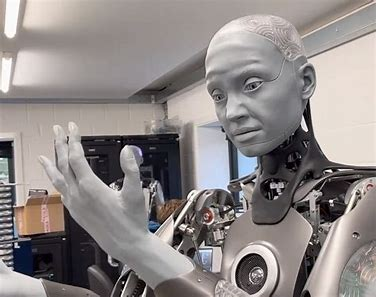
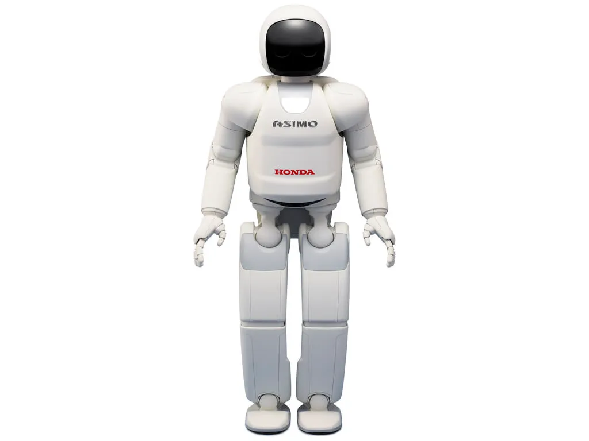
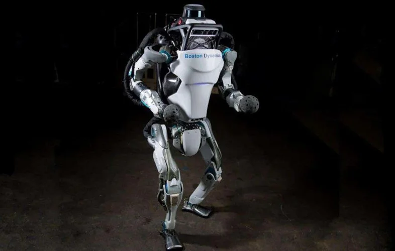
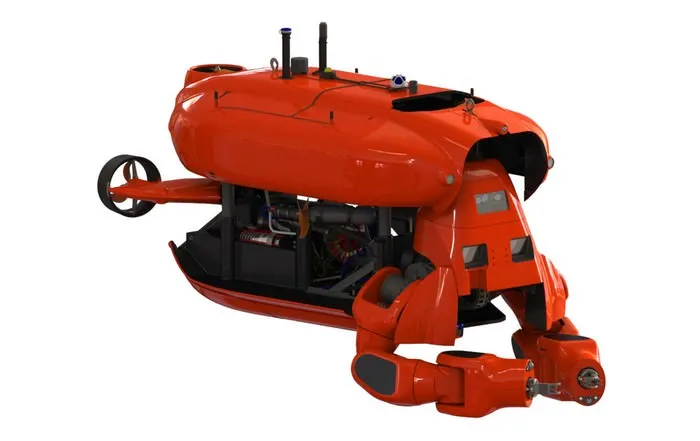
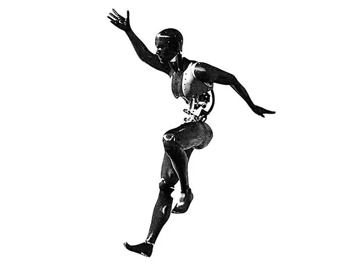
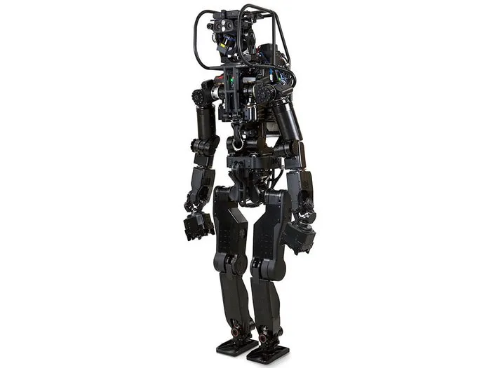
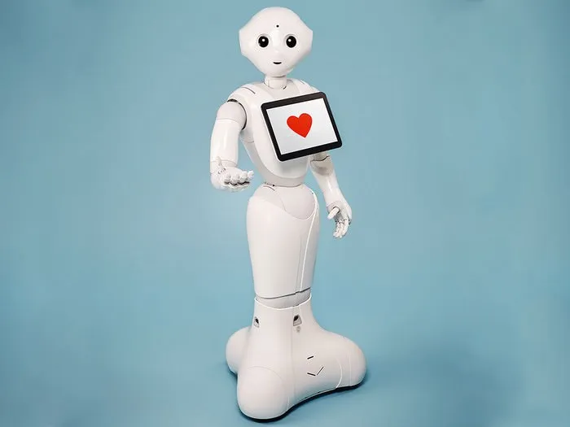
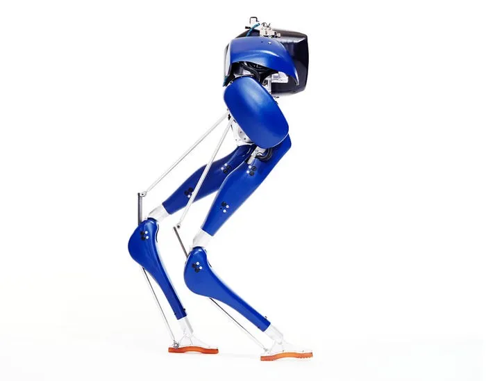

Os robôs mais avançados do mundo
Conheça os robôs mais impressionantes já criados pela humanidade.
1. Sofia
O robô humano mais avançado que existe é o Sophia. É um exemplo realista de um robô humanoide perfeito porque tem cerca de 50 expressões faciais diferentes, assim como os humanos. O Sophia é projetado principalmente para educação, pesquisa e entretenimento. Ele viaja pelo mundo explicando às pessoas a importância dos robôs na vida humana. Sophia deu entrevistas para muitos grandes canais de notícias de TV como CNN, BBC e mais. No ano de 2017, o governo da Arábia Saudita concedeu a Sophia cidadania com grande honra. David Hanson criou Sophia como uma imagem da falecida atriz Audrey Hepburn e sua esposa Amanda Hanson. É provavelmente o robô mais avançado do mundo.
2. Asimo
O robô é geralmente classificado na segunda posição em todos os lugares porque é considerado um dos robôs humanos mais avançados já feitos. O foco principal do robô é ajudar as pessoas. Asimo viaja por todo o mundo como um embaixador da marca de robôs, conscientizando as pessoas sobre como os robôs podem tornar a vida mais fácil e ajudar os humanos. Ele pode dançar, correr e até chutar uma bola de futebol. Asimo significa ‘Advanced Step in Innovative Mobility’. O robô pode se comunicar com as pessoas em três idiomas diferentes, incluindo japonês, chinês e inglês.
3. Atlas
De acordo com algumas empresas, é o humanoide mais ágil que existe. O formato do seu corpo é tão dinâmico que ele pode usar todas as suas habilidades corporais para se mover rapidamente e se equilibrar em terrenos diversos. O robô é capaz de executar muitas tarefas diferentes, mas algumas das suas tarefas favoritas são correr, pular e dar cambalhotas. Seus sistemas avançados de IA o tornam capaz de detectar obstáculos e negociar em terrenos diversos.
4. Aquanaut
Robôs Aquanaut são usados para fazer tarefas complexas de manipulação debaixo d’água. No modo submarino, ele pode viajar a uma velocidade de 200 km/h com uma profundidade operacional de 300 metros. Ele funciona com uma tecnologia avançada que é capaz de inspecionar infraestrutura de gás e óleo submarino. Ele pode operar válvulas e usar ferramentas para correções em algumas partes.
5. Estuprônico
Os robôs Stuntronic são feitos pela Walt Disney imagineering para entretenimento das pessoas. É um robô Stunt animatrônico que é capaz de executar cambalhotas aéreas, giros e muito mais. Esses robôs funcionam em uma tecnologia avançada que contém sensores de bordo para monitorar as atividades de movimento corretas para cambalhotas, giros e outras atividades, como pousar na hora certa.
6. HRP-5P
Como o nome sugere, o HRP-5P é o robô de 5ª geração da série de robôs HRP. Ele é usado para manusear objetos grandes e ferramentas em canteiros de obras. O robô é capaz de fazer tarefas complexas como manusear chapas de drywall e muito mais.
Pepper
Pepper é o primeiro robô humano social do mundo com habilidades para reconhecer rostos, emoções humanas básicas e entender idiomas. Ele é usado para interação humana e se envolver com pessoas por meio de conversas e mostra suas palavras na tela de toque colocada em seu peito. No lançamento do Pepper, o CEO da SoftBank, Sr. Masayoshi Son, pediu ao Pepper para apresentar algumas de suas funções, então Pepper respondeu “Masa, não quero me exibir, isso pode levar mais de 100 horas”. Isso realmente fez todos os presentes rirem.
Cassie
Cassie é a versão inferior do Digit. É um robô dinâmico que é capaz de andar e correr como humanos e animais. Cassie pode andar em ambientes e terrenos diversos e complexos e, devido à sua tecnologia avançada e sensores, deve ser usado em operações de busca e resgate no futuro. Cassie recebeu o nome do pássaro australiano Cassowary, que tem formato de pernas semelhante ao de Cassie.